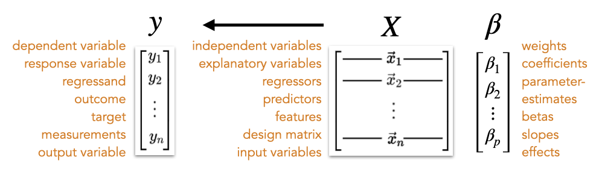

Mathematical Notation Reference
A guide to symbols and notation used in PSYC 201B
This is a quick-lookup guide for mathematical symbols you’ll encounter in the course.
See also: Common Formulas | Glossary
Quick Reference
The most common symbols you’ll encounter:
| Symbol | Meaning | Symbol | Meaning |
|---|---|---|---|
| \(\bar{x}\) | Sample mean | \(\hat{y}\) | Predicted value |
| \(s\) | Sample SD | \(\hat{\beta}\) | Estimated coefficient |
| \(\sigma\) | Population SD | \(e\) | Residual |
| \(n\) | Sample size | \(r\) | Correlation |
| \(p\) | Number of predictors | \(df\) | Degrees of freedom |
| \(SE\) | Standard error | \(R^2\) | R-squared |
Mathematical notation varies across fields:
- Classical statistics (explanation/inference) tends toward flexible notation that’s changed over generations
- Machine learning (prediction/algorithms) has converged on more standardized conventions (e.g., the Goodfellow textbook)
We use classical statistics notation in this course. Key differences you may see in readings:
| Concept | Classical Stats | ML Convention |
|---|---|---|
| Vectors | \(x\) or \(\mathbf{x}\) | \(\boldsymbol{x}\) (bold lowercase) |
| Matrices | \(X\) or \(\mathbf{X}\) | \(\boldsymbol{X}\) (bold uppercase) |
| Transpose | \(X'\) or \(X^T\) | \(\boldsymbol{X}^\top\) |
| Parameters | \(\beta\) | \(\boldsymbol{\theta}\) (often) |
Numbers and Variables
| Symbol | Meaning | Example |
|---|---|---|
| \(x\), \(y\), \(z\) | Variables (scalar values) | \(x = 5\) |
| \(x_i\) | The \(i\)th observation of \(x\) | \(x_3\) = value for observation 3 |
| \(n\) | Sample size (number of observations) | \(n = 100\) participants |
| \(p\) | Number of predictors | 3 predictors → \(p = 3\) |
| \(df\) | Degrees of freedom | \(df = n - p - 1\) |
| \(i\), \(j\), \(k\) | Index variables (for counting) | \(\sum_{i=1}^{n}\) |
Vectors and Matrices
| Symbol | Meaning | Dimensions |
|---|---|---|
| \(\mathbf{x}\) | A vector (ordered list of numbers) | \(n \times 1\) |
| \(\mathbf{X}\) | A matrix (2D array of numbers) | \(n \times p\) |
| \(\mathbf{y}\) | Outcome vector (all \(y\) values) | \(n \times 1\) |
| \(\mathbf{I}\) | Identity matrix (1s on diagonal, 0s elsewhere) | \(n \times n\) |
| \(\mathbf{0}\) | Zero vector (all zeros) | \(n \times 1\) |
Multiplying by \(\mathbf{I}\) leaves a matrix unchanged — like multiplying by 1.
Hats, Bars, and Decorations
| Symbol | Name | Meaning |
|---|---|---|
| \(\bar{x}\) | “x-bar” | Sample mean of \(x\) |
| \(\hat{y}\) | “y-hat” | Predicted/fitted value of \(y\) |
| \(\hat{\beta}\) | “beta-hat” | Estimated coefficient (from data) |
| \(\hat{\sigma}^2\) | “sigma-hat squared” | Estimated variance |
| \(\tilde{x}\) | “x-tilde” | Median or transformed value |
A hat ( \(\hat{}\) ) almost always means “estimated from data.”
- \(\beta\) = the true (unknown) population parameter
- \(\hat{\beta}\) = our estimate of \(\beta\) from the sample
Subscripts and Superscripts
| Pattern | Meaning | Example |
|---|---|---|
| \(x_i\) | Observation \(i\) | \(x_3\) = 3rd observation |
| \(x_{i,j}\) | Row \(i\), column \(j\) | \(x_{5,2}\) = 5th person, 2nd variable |
| \(\beta_j\) | Coefficient for predictor \(j\) | \(\beta_2\) = coefficient for 2nd predictor |
| \(\bar{x}_j\) | Mean of variable \(j\) | \(\bar{x}_1\) = mean of first variable |
| \(x^2\) | \(x\) squared | — |
| \(\hat{\theta}^{(b)}\) | Estimate from \(b\)th bootstrap sample | Used in resampling |
Sample vs. Population
A key distinction in statistics:
| Concept | Sample (from data) | Population (theoretical) |
|---|---|---|
| Mean | \(\bar{x}\) (x-bar) | \(\mu\) (mu) |
| Variance | \(s^2\) | \(\sigma^2\) (sigma-squared) |
| Standard deviation | \(s\) | \(\sigma\) (sigma) |
| Correlation | \(r\) | \(\rho\) (rho) |
| Size | \(n\) | \(N\) |
Sample statistics (calculated from data) estimate population parameters (true but unknown values). The different symbols remind us of this distinction.
Relationships and Correlation
| Symbol | Name | Meaning |
|---|---|---|
| \(r\) | “r” | Sample Pearson correlation (range: -1 to 1) |
| \(\rho\) | “rho” | Population correlation |
| \(r_s\) | — | Spearman (rank) correlation |
| \(\tau\) | “tau” | Kendall’s tau correlation |
| \(\text{Cov}(x, y)\) | — | Covariance of \(x\) and \(y\) |
| \(z\) or \(z_i\) | “z-score” | Standardized value: \((x_i - \bar{x})/s\) |
Uncertainty and Standard Errors
| Symbol | Meaning |
|---|---|
| \(SE\) | Standard error (generic) |
| \(SE_{\bar{x}}\) | Standard error of the mean |
| \(SE(\hat{\beta})\) | Standard error of a coefficient |
| \(\hat{\sigma}^2\) | Estimated residual variance |
| \(\hat{\sigma}\) | Estimated residual standard deviation |
Sums of Squares and Model Fit
| Symbol | Name | Meaning |
|---|---|---|
| \(SS_{tot}\) | Total sum of squares | \(\sum(y_i - \bar{y})^2\) — total variance in \(y\) |
| \(SS_{res}\) or \(SSE\) | Residual sum of squares | \(\sum(y_i - \hat{y}_i)^2\) — unexplained variance |
| \(SS_{model}\) | Model sum of squares | \(SS_{tot} - SS_{res}\) — explained variance |
| \(MS\) | Mean square | Sum of squares divided by \(df\) |
| \(MS_{model}\) | Model mean square | \(SS_{model} / p\) |
| \(MS_{error}\) | Error mean square | \(SS_{res} / (n - p - 1)\) |
| \(R^2\) | R-squared | Proportion of variance explained |
| \(F\) | F-statistic | \(MS_{model} / MS_{error}\) |
Model Comparison
These symbols support the “is the more complex model worth it?” framing:
| Symbol | Meaning |
|---|---|
| \(PRE\) | Proportional Reduction in Error |
| \(ERROR(C)\) | Error from Compact (simpler) model |
| \(ERROR(A)\) | Error from Augmented (complex) model |
| \(H_0\) | Null hypothesis |
| \(H_1\) or \(H_a\) | Alternative hypothesis |
\[PRE = \frac{ERROR(C) - ERROR(A)}{ERROR(C)}\]
\(PRE\) tells you what proportion of the Compact model’s error is eliminated by the Augmented model. This is directly related to the F-test and \(R^2\) change.
Hypothesis Testing
| Symbol | Meaning |
|---|---|
| \(H_0\) | Null hypothesis (no effect) |
| \(H_1\) or \(H_a\) | Alternative hypothesis |
| \(\alpha\) | Significance level (typically 0.05) |
| \(p\) | p-value (probability under \(H_0\)) |
| \(t\) | t-statistic |
| \(F\) | F-statistic |
| \(df\) | Degrees of freedom |
| \(t_{\alpha/2, df}\) | Critical t-value for confidence level \(\alpha\) |
Greek Letters Reference
| Letter | Name | Pronunciation | Common Use |
|---|---|---|---|
| \(\alpha\) | alpha | “AL-fuh” | Significance level |
| \(\beta\) | beta | “BAY-tuh” | Regression coefficient; Type II error |
| \(\gamma\) | gamma | “GAM-uh” | Group-level coefficients (mixed models) |
| \(\delta\) | delta | “DEL-tuh” | Difference or change |
| \(\epsilon\) | epsilon | “EP-sih-lon” | Error term |
| \(\zeta\) | zeta | “ZAY-tuh” | (rare in intro stats) |
| \(\eta\) | eta | “AY-tuh” | Effect size (\(\eta^2\)) |
| \(\theta\) | theta | “THAY-tuh” | Generic parameter |
| \(\lambda\) | lambda | “LAM-duh” | Eigenvalue; regularization |
| \(\mu\) | mu | “myoo” | Population mean |
| \(\nu\) | nu | “noo” | Degrees of freedom (alternative) |
| \(\pi\) | pi | “pie” | Probability; 3.14159… |
| \(\rho\) | rho | “row” | Population correlation |
| \(\sigma\) | sigma | “SIG-muh” | Standard deviation |
| \(\tau\) | tau | “tow” (rhymes with “cow”) | Kendall’s tau; random effect variance |
| \(\phi\) | phi | “fie” or “fee” | Various (binary correlation) |
| \(\chi\) | chi | “kye” (rhymes with “sky”) | Chi-squared (\(\chi^2\)) |
| \(\psi\) | psi | “sigh” or “psee” | (rare in intro stats) |
| \(\omega\) | omega | “oh-MAY-guh” | Effect size (\(\omega^2\)) |
Capital letters:
| Letter | Name | Common Use |
|---|---|---|
| \(\Sigma\) | capital sigma | Covariance matrix; summation |
| \(\Delta\) | capital delta | Change (e.g., \(\Delta R^2\)) |
Operators
Summation and Product
\[\sum_{i=1}^{n} x_i = x_1 + x_2 + \cdots + x_n\]
Read as: “Sum of \(x_i\) from \(i=1\) to \(n\)” — add up all \(n\) values.
\[\prod_{i=1}^{n} x_i = x_1 \times x_2 \times \cdots \times x_n\]
Read as: “Product of \(x_i\) from \(i=1\) to \(n\)” — multiply all \(n\) values.
Matrix Operations
| Symbol | Name | Meaning |
|---|---|---|
| \(\mathbf{X}^T\) or \(\mathbf{X}'\) | Transpose | Flip rows and columns |
| \(\mathbf{X}^{-1}\) | Inverse | Matrix that “undoes” \(\mathbf{X}\) |
| \(\mathbf{AB}\) | Matrix multiplication | Multiply matrices (order matters!) |
| \(\mathbf{X}^T\mathbf{X}\) | Gram matrix | \(\mathbf{X}\) transposed times \(\mathbf{X}\) |
| \(\|\mathbf{x}\|\) | Norm | Length/magnitude of vector |
| \(\det(\mathbf{A})\) | Determinant | Scalar summary of matrix |
Common Math Symbols
| Symbol | Meaning | Example |
|---|---|---|
| \(\approx\) | Approximately equal | \(\pi \approx 3.14\) |
| \(\neq\) | Not equal | \(x \neq 0\) |
| \(\leq\) | Less than or equal | \(p \leq 0.05\) |
| \(\geq\) | Greater than or equal | \(n \geq 30\) |
| \(|x|\) | Absolute value | \(|-3| = 3\) |
| \(\propto\) | Proportional to | \(y \propto x\) |
| \(\sqrt{x}\) | Square root | \(\sqrt{4} = 2\) |
Probability and Distributions
| Symbol | Meaning | Example |
|---|---|---|
| \(P(A)\) | Probability of event \(A\) | \(P(\text{heads}) = 0.5\) |
| \(P(A \mid B)\) | Probability of \(A\) given \(B\) | Conditional probability |
| \(p(x)\) | Probability density function | For continuous variables |
| \(X \sim N(\mu, \sigma^2)\) | \(X\) follows Normal distribution | \(X \sim N(0, 1)\) = standard normal |
| \(E[X]\) or \(\mathbb{E}[X]\) | Expected value of \(X\) | \(E[X] = \mu\) |
| \(\text{Var}(X)\) | Variance of \(X\) | \(\text{Var}(X) = \sigma^2\) |
The symbol \(\sim\) means “is distributed as.”
\(\epsilon \sim N(0, \sigma^2)\) reads: “epsilon is distributed as Normal with mean 0 and variance sigma-squared.”
Regression and GLM
| Symbol | Meaning |
|---|---|
| \(y\) | Outcome/dependent variable (one observation) |
| \(\mathbf{y}\) | Vector of all outcomes |
| \(x\) | Predictor/independent variable (one value) |
| \(\mathbf{X}\) | Design matrix (all predictors, all observations) |
| \(\beta_0\) | Intercept |
| \(\beta_1, \beta_2, \ldots\) | Slope coefficients |
| \(\boldsymbol{\beta}\) | Vector of all coefficients |
| \(\hat{y}\) | Predicted value |
| \(e\) or \(e_i\) | Residual (\(y_i - \hat{y}_i\)) — not Euler’s number! |
| \(\epsilon\) | Error term (population) |

In regression, \(e\) typically means residual (the difference between observed and predicted). This is different from Euler’s number \(e \approx 2.718\), which appears in exponential functions. Context makes it clear which is meant.
In statistics, we organize data as:
- Rows = observations (one per participant/trial)
- Columns = variables (one per measurement)
A design matrix \(\mathbf{X}\) with 100 participants and 3 predictors is \(100 \times 3\).
Set Notation (Occasional)
| Symbol | Meaning | Example |
|---|---|---|
| \(\in\) | “is an element of” | \(x \in \mathbb{R}\) (\(x\) is a real number) |
| \(\mathbb{R}\) | The real numbers | All numbers on the number line |
| \(\{0, 1\}\) | A set containing 0 and 1 | Binary outcomes |
| \([a, b]\) | Closed interval (includes endpoints) | \(x \in [0, 1]\) |
| \((a, b)\) | Open interval (excludes endpoints) | \(0 < x < 1\) |
LaTeX Quick Reference
For writing your own formulas:
| Symbol | LaTeX | Symbol | LaTeX |
|---|---|---|---|
| \(\bar{x}\) | \bar{x} |
\(\hat{y}\) | \hat{y} |
| \(\sum\) | \sum |
\(\prod\) | \prod |
| \(\sqrt{x}\) | \sqrt{x} |
\(\frac{a}{b}\) | \frac{a}{b} |
| \(\beta\) | \beta |
\(\epsilon\) | \epsilon |
| \(\sigma\) | \sigma |
\(\mu\) | \mu |
| \(\mathbf{X}\) | \mathbf{X} |
\(X^T\) | X^T |
| \(X^{-1}\) | X^{-1} |
\(\sim\) | \sim |
| \(\approx\) | \approx |
\(\neq\) | \neq |
| \(\leq\) | \leq |
\(\geq\) | \geq |